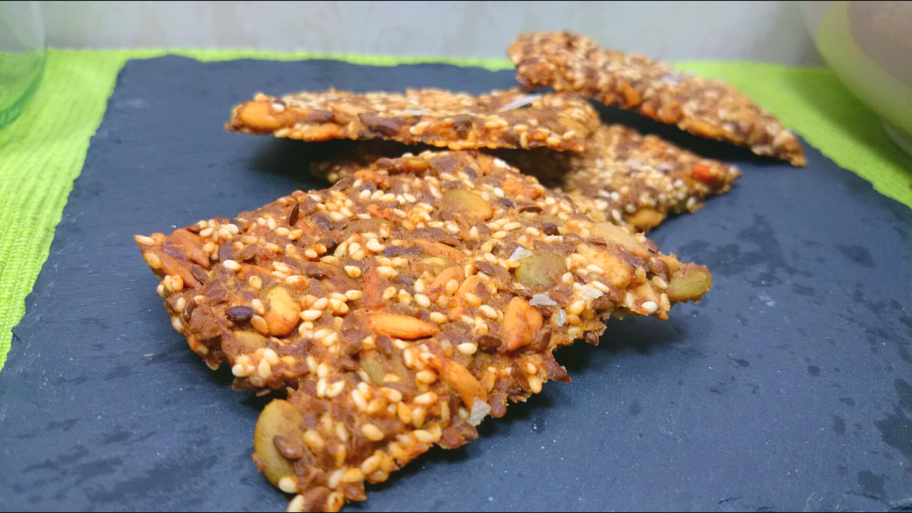
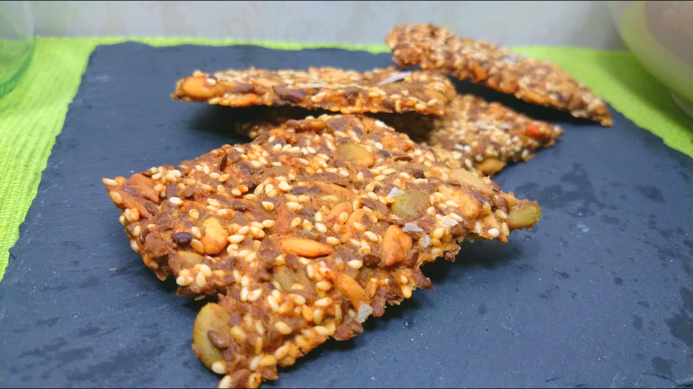

Il était une fois... le grain.
Ce grain s'appelle blé, orge, seigle, épeautre, kamut ou avoine.
Ces grains sont proscrits pour les personnes qui sont atteints de la maladie du cœliaque (intolérance au gluten) ou sensibles. Le gluten est un composé d'amidon et de protéines qui se trouve dans certains grains, comme les différentes espèces de blé.
Environ 1 % de la population serait affectée par la maladie cœliaque.
La maladie cœliaque (intolérance au gluten)
La maladie cœliaque est une maladie auto-immune dans laquelle le système immunitaire attaque la muqueuse de l'intestin grêle après l'ingestion de gluten, chez une personne génétiquement sensible.
La sensibilité au gluten non cœliaque (SGNC)
Dans la sensibilité au gluten non cœliaque (SGNC), des personnes qui ne présentent pas les marqueurs sanguins, tissulaires, et génétiques de la maladie cœliaque ont des symptômes qui apparaissent peu de temps après l’ingestion de gluten et qui disparaissent suite au retrait du gluten de l’alimentation.
 
